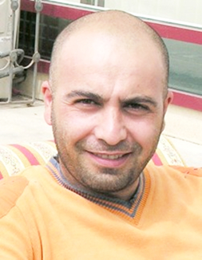

ВОКЗАЛ-НЕ ВЕЗДЕ ВОКЗАЛ.


ВОКЗАЛ-НЕ ВЕЗДЕ ВОКЗАЛ.
ЛЕКЦИЯ В КАВКАЗСКОМ УНИВЕРСИТЕТЕ
Дорогие студенты, до этого я провел 13 лекций в различных университетах, но сегодня впервые нахожусь здесь, в Кавказском Университете, где сам когда-то учился. Поэтому говорят: Нет пророка в своем отечестве. Я сам был слушателем на многих лекциях, был участником многих семинаров и конференций. Самая большая проблема.... или по другому говоря, самая главная обязанность лектора – быть интересным. Чтобы аудитория не скучала. Я не определяю людей по принципу: худой-тонкий, щедрый-жадный, красивый-уродливый, плохой-хороший. Я людей разделяю на интересных и не интересных. Вот в этом университете преподавал один интересный человек. Я его часто вспоминаю. Он был интересным человеком и сильно отличался от других. Мухаммед Ява был оригинальным. Здесь я должен привести слова Сомерсета Моэма. Он говорит: если человек оригинален, я могу простить все его грехи. Нас учитель Мохаммед Ява часто повторял одно предложение: У Турции есть две беды. Первая – это османская ностальгия. Об этом я много говорил и писал. Слабые люди живут прошлым. По словам Мухаммеда-ходжи, турки инвестировали не свое будущее, а прошлое. И жить прошлым – беда для народа. Это означает, что ты живешь без будущего. Вторая беда – шоу бизнес. Я об этом хочу сказать поподробнее. О том, как нас полностью зомбировали. По этой теме я написал более 200 статей. Какая пустота. Сами пишем, сами читаем.
Значит так. Сначала с телевидения стали убирать все интеллекуальные передачи. Все реже и реже стали мы видеть нормальных людей: писатели, интеллектуалы исчезли с экранов. Вместо этого, 24 часа в сутки мы вынуждены смотреть и слушать звезд эстрады. Началась великая шоу-эстафета. Мухаммед-ходжа нас предупреждал об опасности. Поэтому я начал постоянно писать о шоу. И в некоторых случаях повторял слова Мухаммеда-ходжи.
Как только шоу-звезды полностью и с большим успехом заняли все телевидение, начался второй этап. Они начали делать искусственные скандалы. Это захватило народ. Народ забыл все проблемы. Ему стало не до того, где течет нефть. Более интересно смотреть как в прямом эфире дерутся две популярные певицы. Дерутся так, что даже видны их трусики.
Начался третий этап. На этом этапе организовались различные программы, где певицы и певцы начали просить от поклонников послать sms в их пользу. Я называю это sms-войной. Конечно же есть мужчины, которые больше любят спать с именем и с титулом, чем с женщиной ...
Этой слабостью воспользовались. Богатому мужчине нужно, чтобы женщина, с которой у него отношения, была самой популярной певицей страны. Лишь бы говорили, этот человек имеет связь с такой-то певицей. Я повторяю, есть такие мужчины, которые любят спать с титулом женщины, а не с самой женщиной. Один раз две популярные певицы вышли на дуэль в шоу-программе «Золотой микрофон». Одна из них получила в течение часа 250 тысяч sms, другая – 235 тысяч sms. Это была кульминация sms-войны. Напоминаю, что один sms стоит один манат. Представьте, пожалуйста, какая ситуация. На следующий день газета «Азадлыг» («Свобода») дала маншет: «SMS-война между двумя министрами». Это не была дуэль двух певиц. На дуэль вышли два министра, их спонсоры. Спонсорам в нашей стране диктуется совсем другое назначение. Я, к сожалению, не могу озвучить словом это значение спонсора. Но надеюсь, вам понятно.
Это был самый тяжелый этап. Начались и другие шоу. В одном из них, зрители послали участнику более миллиона sms, причем это были не только граждане Азербайджана, но и азербайджанцы, живущие в Турции и России. Хочу отметить один факт. Только мобильный оператор «Azercell» в год зарабатывает один миллион манат за счет музыкальных звонков. Просто звонишь и слушаешь музыку. И это случается в той стране, где люди, готовы придумать миллион предлогов, чтобы не купить газету (газета стоит 30 копеек). Представьте, в Норвегии, в Голландии, после 21.00 показывают социальные рекламы, и люди отправляют на ихний номер sms-ы для того, чтобы мы стали людьми. Чтобы у нас было гражданское общество. А мы тратим деньги на шоу-звезд, которые над нами издеваются.
Однажды мы хотели показать спектакль детям, живущим в интернатах, в детских домах. Просили помощь у разных посольств. Все нам без дипломатических выкрутасов говорили: у вас есть нефть и уже есть деньги. В самом деле, граждане твоей страны отправляют миллионы sms какой-то сучке, а ты просишь деньги у иностранцев, чтобы показать спектакль детям-сиротам. Признайте же, что это не этично. У меня друзья работают в различных телекомпаниях. Мы много говорили на эту тему. Я хотел узнать, это естественный процесс или запрограммированный. Они сказали, есть программа и этот процесс управляемый. Чем больше шоу, тем зомбированней народ.
Мы, творческая молодежь, не знали, что делать. Все были в шоке. Каждый вечер народ отправляет потоки сообщений в разные шоу-программы. Тогда мы начали писать статьи, в которых призывали людей не участовать в sms-голосованиях. Мы говорили, что никому не можем запретить смотреть эти передачи, но хотя бы не отправляйте sms. Кому говоришь? Сами пишем, сами читаем.
Начался четвертый этап. На этом этапе начали показывать дома шоу-звезд. Большие, со всеми удобствами. Даже их собака имеет свою отдельную комнату, диван, кресло, игрушки. У них - дорогие машины. Начали создавать портретные передачи о шоу-звездах. Где показывают как они купаются, кушают, спят. Как одеваются. Как отдыхают. Как готовят еду. Они рассказывали о своей судьбе, о своей жизни. Как им когда-то было трудно. У них даже не было гармони, зурны, дудука, мудука, они работали официантом, проводником, шофером, но несмотря на все эти трудности, они в конце концов победили. Терпи казак, атаманом будешь. На фоне грустной музыки они плакали, и сразу же поспешно вытирали слезы. Это называется «детдомовские слезы». Чистый телевизионный термин. Потом их стали приглашать на разные утренние и вечерние передачи, и они начали оттуда учить нас, как нужно создавать семью, как сохранять семью, как нужно общаться со старшими по возрасту, как воспитывать детей. Как надо кушать. Как вести себя. И наконец, что надо читать. Вот так шоу-звезды стали важным общественным элементом.
ЧТО ДЕЛАТЬ?
Откроем мемуары известного декабриста Розена. Он пишет в своих воспоминаниях: около двух тысяч солдат стояли перед армией царя. К нам приходили разные люди, религиозные личности, князья, воины и уговаривали нас положить оружие. Народ собрался на Сенатской площади и смотрел этот спектакль. Один из моих друзей был тяжело ранен в руку. Вдруг кто-то из толпы бросил камень и попал ему в голову. Это очень взволновало Розена. Он пишет: у меня есть все: звание, дом, красивая женщина - что я здесь делаю?
Ругать народ очень легко. И бессмысленно. В начале 20-го века наши классики очень жестко ругали народ и даже оскорбляли. Но это не помогло. У народа только углубился комплекс неполноценности. В итоге получилось: да, мы такие и из нас никогда ничего не выйдет. И хуже всего то, что ничего не изменилось. То, о чем говорили 100 лет назад, то, о чем писали 100 лет назад, - повторяется. Основоположник азербайджанской драматургии Ахундов писал: когда я думаю, что будущее поколение рождается от этих ослов, надежда на будущее во мне умирает. Вы заметили, как радостно отмечалось столетие журнала «Молла Насреддин»? Многие были бесконечно счастливы – у нас были гении и написанное ими 100 лет назад актуально и сегодня. Они не гении. Просто мы не изменились. И это наша беда, что их творчество осталось актуальным. Есть один поэт-сатирик – Сабир. Вы наверно должны были хотя бы слышать его имя. Каждый год в городе Шамахи проводят Дни Сабира. Я заметил одну вещь: самые мерзкие люди, персонажи классиков, гордятся нашими классиками. Получается, что ругать и оскорблять народ – это не выход.
Нам нужен деспот. Но просвещенный. Например, мы писали очень много статей о похоронной церемонии, где люди тратят бешенные деньги. Накрывают раскошные столы с бананами, киви, различными сладостями, соками и с 4-5 видами блюд. Это больше похоже на свадьбу, чем на похороны. Не хватает только музыки и жениха с невестой. После похорон люди строят мавзолеи над могилами. Одним словом тратят такие деньги, что лучше быть мертвым, чем живым. Мы писали много статей и призывали людей не тратить так деньги. Мы больше тратим деньги на мертвых, чем на живых. Наши кладбища более конфортны, чем наши деревни и поселки. Кому говоришь? Сами пишем, сами читаем. Но в один прекрасный день глава Нахичевани В.Талибов (который в прямом эфире читал с бумаги «XX век» как «икс-икс век») собрал всех аксакалов и мулл Нахичевани и жестко запретил торжественные похороны, запретил тратить деньги на похороны. Он запретил всем муллам участвовать на таких похоронах. Он обещал, что кто нарушит приказ, будет строго казнен. В. Талибов разрешил только ставить на стол чай с сахаром. И все – проблема решена. Получается что человек, который «XX век» читал как «икс-икс век» более функционален, чем мы. Бестужев-Марлинский писал: характер деспота сразу влияет на жизнь народа в деспотических режимах.
Одним словом, мы сами заказчики этого общества. Мой друг закончил университет в Турции. Очень интеллектуальный человек. Такого уровня в Азербайджане 5-6 человек, не больше. Он начал преподавать у университете, который народ называет «нархозом». Он не брал взятки. Одевался оригинально. Не как другие. Студенты видели совсем другой тип учителя. Молодой, свободный. Из-за того, что не брал взятки, у моего друга возникли проблемы. Вы знаете, кто начал протестовать против него? Сами студенты. Им труднее учиться, чем дать взятку и бездельничать.
Другой пример. Мне не давали паспорт в Баку. Был вынужден получить паспорт в районе. Увидел там своего сокурсника. Поздоровались. Я увидел, что он там продает бланки, один манат за каждый. И сам заполняет вместо других. Я ему напомнил те дни, когда мы много говорили и хотели создать хорошее общество. Для этого мы были готовы на все, а сейчас он берет взятки. Он продает бланки, которые полагаются бесплатно.
Он взял пачку бланков, раздал стоящим в очереди и сказал – сами заполняйте. Люди начали искать ручки. Поднялся шум. Ручки откуда-то нашлись. И знаете что случилось? Люди не могли написать свое имя, фамилию, и разные формальные вещи. Началась анархия. Кричали, ругались, каждый испортил 5-6 бланков. Нашли кого-то и попросили, чтобы помог другим заполнить бланки. Он отказался, сказал куда-то спешит, хотя тоже стоял в очереди. Все говорили: Что за беспредел? Раньше хорошо было, мы платили манат, и он все сам делал. Аккуратно, без шума. Мой друг смеялся. Он сказал: ВИДЕЛ?
Я видел все своими глазами и проиграл. Мы заказчики этого общества. Кто приглашает певцов на свадьбу и платит бешенные деньги? Не ангиличане, не французы, не немцы, конечно же. Мы сами. Наши люди чтобы не купить газету за 30 копеек могут придумать миллион предлогов. Один из этих предлогов – изменение алфавита, многие не могут читать на новом алфавите. Но если бы в год изучали по 2 буквы, давно бы научились читать на латинице. Это настолько несерьезный предлог, что я вынужден дать несерьезный ответ.
ВОКЗАЛ,
Есть очень легкий способ узнать страну, узнать уровень народа, живущего в ней. Это быть на вокзале, в общественном туалете. И стоять 5 минут на таможне. Если таможенники очень серьезны, проверяют вещи с очень злым и строгим лицом, это говорит о том, что страна несерьезная.
О туалете хочу привести одну деталь. Оставим общественные туалеты, о них даже не стоит говорить. Почти во всех туалетах фирм, студий, редакций газет я видел объявление: Пожалуйста, спускайте воду. Это смешно. Жду, чтобы где-нибудь вывесили: Пожалуйста спустите воду и застегните ширинку. Ведь спустить воду и застегнуть ширинку – это одно и тоже. И самое интересное, что в этих фирмах, студиях, газетах работают вроде бы нормальные люди.
Про вокзалы говорят, вокзал – везде вокзал. Нет, я с этим не согласен. Вы когда нибудь задумывались, почему экс-посол Америки Стэнли Эскудеро (которого в Азербайджане прозвали Паскудеро), после завершения своей дипломатической миссии, остался в Азербайджане и легко превратился в бизнесмена. В данный момент он больше любит нашу страну, чем мы сами. Он кайфует, ему все позволено, он здесь чувствует себя свободней, чем в Америке. Он с оружием охотится в заповедниках Азербайджана. Конечно же очень легко человеку кайфовать, кушать икру, отдыхать в самых красивых местах, иметь виллу и любить ту страну, в которой все позволено. Мы сами позволили. Что хотели, то с нами и сделали. Как сказал Зардушт Ализаде в нашей стране все случается и параллельно ничего не случается. Потому что мы все зрители. Разрушаются дома, не дают компенсаций. Люди, которые не покупают газеты и в других случаях издеваются над нами (Кто вы такие? Мы выбрали своего Президента), прибегают к нам и начинают плакать. Они даже не дали нам плакаты повесить во время выборов. Выгнали нас. Сейчас просят помочь им. Но как? Они сами были зрителями, когда разрушали дома других и не платили компенсаций. И так все зрители ждут своей очереди.
Вокзал – не везде вокзал. Я прошу вас, кто не читал роман «Невыносимая легкость бытия», пусть прочитает. Автор, Милан Кундера, пишет: Очень трудно, когда писатель хочет убедить читателя, что его герой на самом деле жил, что есть прототип. Даже для того, чтобы описать одну ситуацию, написать одно предложение, я вынужден придумать 7-8 образов, и вынужден написать роман.
Герой романа «Невыносимая легкость бытия» хирург Томаш увольняется с работы. Это случается тогда, когда советские танки заходят в Прагу в 1968 году. Причина в одной статье, которую написал сам Томаш. Я коротко описываю. Если хотите знать в чем именно дело, вы вынуждены прочитать роман.
Томаш никого не предает. Несмотря на то, что остается без работы. Потом он вынужден устроиться в фирму, где чистят стекла, витрины. Когда Томаша вызывают куда-то, например в магазин чистить витрины, за него делают работу находящиеся поблизости женщины. Люди общаются с ним более вежливо, чем раньше, чтобы Томаш не сломался. Все обращаются к нему «Пан Доктор». Женщины получают от него разные советы, даже гинекологические. Шутят с Томашом. Везде его принимают с большим уважением, с радостью, с улыбкой. Когда его приглашают чистить стекла, он отдыхает, его угощают сладостьями, шоколадом. Люди звонят в фирму и требуют именно Томаша, как будто он выполняет работу лучше других сотрудников фирмы. В конце ему выдают чек, где написано, что Томаш работал 5-6 часов. Однажды женщина позвонила в фирму и вызвала Томаша к себе домой чистить стекла. Он пришел туда, по адресу. Он хотел взять ведро и начать работать. Чистить дом. Женщина не дала ему эту возможность. Сказала работа не ... (сами заполняйте точки), может долго стоять. Они кушали торт, женщина открыла бутылку шампанского, потом, после всего этого, взяла руку Томаша и повела его в спальню. Вот так чешский народ не дал сломаться своему интеллекту.
Сеймур Байджан
08-08-08
Значит так. Сначала с телевидения стали убирать все интеллекуальные передачи. Все реже и реже стали мы видеть нормальных людей: писатели, интеллектуалы исчезли с экранов. Вместо этого, 24 часа в сутки мы вынуждены смотреть и слушать звезд эстрады. Началась великая шоу-эстафета. Мухаммед-ходжа нас предупреждал об опасности. Поэтому я начал постоянно писать о шоу. И в некоторых случаях повторял слова Мухаммеда-ходжи.
Как только шоу-звезды полностью и с большим успехом заняли все телевидение, начался второй этап. Они начали делать искусственные скандалы. Это захватило народ. Народ забыл все проблемы. Ему стало не до того, где течет нефть. Более интересно смотреть как в прямом эфире дерутся две популярные певицы. Дерутся так, что даже видны их трусики.
Начался третий этап. На этом этапе организовались различные программы, где певицы и певцы начали просить от поклонников послать sms в их пользу. Я называю это sms-войной. Конечно же есть мужчины, которые больше любят спать с именем и с титулом, чем с женщиной ...
Этой слабостью воспользовались. Богатому мужчине нужно, чтобы женщина, с которой у него отношения, была самой популярной певицей страны. Лишь бы говорили, этот человек имеет связь с такой-то певицей. Я повторяю, есть такие мужчины, которые любят спать с титулом женщины, а не с самой женщиной. Один раз две популярные певицы вышли на дуэль в шоу-программе «Золотой микрофон». Одна из них получила в течение часа 250 тысяч sms, другая – 235 тысяч sms. Это была кульминация sms-войны. Напоминаю, что один sms стоит один манат. Представьте, пожалуйста, какая ситуация. На следующий день газета «Азадлыг» («Свобода») дала маншет: «SMS-война между двумя министрами». Это не была дуэль двух певиц. На дуэль вышли два министра, их спонсоры. Спонсорам в нашей стране диктуется совсем другое назначение. Я, к сожалению, не могу озвучить словом это значение спонсора. Но надеюсь, вам понятно.
Это был самый тяжелый этап. Начались и другие шоу. В одном из них, зрители послали участнику более миллиона sms, причем это были не только граждане Азербайджана, но и азербайджанцы, живущие в Турции и России. Хочу отметить один факт. Только мобильный оператор «Azercell» в год зарабатывает один миллион манат за счет музыкальных звонков. Просто звонишь и слушаешь музыку. И это случается в той стране, где люди, готовы придумать миллион предлогов, чтобы не купить газету (газета стоит 30 копеек). Представьте, в Норвегии, в Голландии, после 21.00 показывают социальные рекламы, и люди отправляют на ихний номер sms-ы для того, чтобы мы стали людьми. Чтобы у нас было гражданское общество. А мы тратим деньги на шоу-звезд, которые над нами издеваются.
Однажды мы хотели показать спектакль детям, живущим в интернатах, в детских домах. Просили помощь у разных посольств. Все нам без дипломатических выкрутасов говорили: у вас есть нефть и уже есть деньги. В самом деле, граждане твоей страны отправляют миллионы sms какой-то сучке, а ты просишь деньги у иностранцев, чтобы показать спектакль детям-сиротам. Признайте же, что это не этично. У меня друзья работают в различных телекомпаниях. Мы много говорили на эту тему. Я хотел узнать, это естественный процесс или запрограммированный. Они сказали, есть программа и этот процесс управляемый. Чем больше шоу, тем зомбированней народ.
Мы, творческая молодежь, не знали, что делать. Все были в шоке. Каждый вечер народ отправляет потоки сообщений в разные шоу-программы. Тогда мы начали писать статьи, в которых призывали людей не участовать в sms-голосованиях. Мы говорили, что никому не можем запретить смотреть эти передачи, но хотя бы не отправляйте sms. Кому говоришь? Сами пишем, сами читаем.
Начался четвертый этап. На этом этапе начали показывать дома шоу-звезд. Большие, со всеми удобствами. Даже их собака имеет свою отдельную комнату, диван, кресло, игрушки. У них - дорогие машины. Начали создавать портретные передачи о шоу-звездах. Где показывают как они купаются, кушают, спят. Как одеваются. Как отдыхают. Как готовят еду. Они рассказывали о своей судьбе, о своей жизни. Как им когда-то было трудно. У них даже не было гармони, зурны, дудука, мудука, они работали официантом, проводником, шофером, но несмотря на все эти трудности, они в конце концов победили. Терпи казак, атаманом будешь. На фоне грустной музыки они плакали, и сразу же поспешно вытирали слезы. Это называется «детдомовские слезы». Чистый телевизионный термин. Потом их стали приглашать на разные утренние и вечерние передачи, и они начали оттуда учить нас, как нужно создавать семью, как сохранять семью, как нужно общаться со старшими по возрасту, как воспитывать детей. Как надо кушать. Как вести себя. И наконец, что надо читать. Вот так шоу-звезды стали важным общественным элементом.
ЧТО ДЕЛАТЬ?
КТО ВИНОВАТ?
Откроем мемуары известного декабриста Розена. Он пишет в своих воспоминаниях: около двух тысяч солдат стояли перед армией царя. К нам приходили разные люди, религиозные личности, князья, воины и уговаривали нас положить оружие. Народ собрался на Сенатской площади и смотрел этот спектакль. Один из моих друзей был тяжело ранен в руку. Вдруг кто-то из толпы бросил камень и попал ему в голову. Это очень взволновало Розена. Он пишет: у меня есть все: звание, дом, красивая женщина - что я здесь делаю?
Ругать народ очень легко. И бессмысленно. В начале 20-го века наши классики очень жестко ругали народ и даже оскорбляли. Но это не помогло. У народа только углубился комплекс неполноценности. В итоге получилось: да, мы такие и из нас никогда ничего не выйдет. И хуже всего то, что ничего не изменилось. То, о чем говорили 100 лет назад, то, о чем писали 100 лет назад, - повторяется. Основоположник азербайджанской драматургии Ахундов писал: когда я думаю, что будущее поколение рождается от этих ослов, надежда на будущее во мне умирает. Вы заметили, как радостно отмечалось столетие журнала «Молла Насреддин»? Многие были бесконечно счастливы – у нас были гении и написанное ими 100 лет назад актуально и сегодня. Они не гении. Просто мы не изменились. И это наша беда, что их творчество осталось актуальным. Есть один поэт-сатирик – Сабир. Вы наверно должны были хотя бы слышать его имя. Каждый год в городе Шамахи проводят Дни Сабира. Я заметил одну вещь: самые мерзкие люди, персонажи классиков, гордятся нашими классиками. Получается, что ругать и оскорблять народ – это не выход.
Нам нужен деспот. Но просвещенный. Например, мы писали очень много статей о похоронной церемонии, где люди тратят бешенные деньги. Накрывают раскошные столы с бананами, киви, различными сладостями, соками и с 4-5 видами блюд. Это больше похоже на свадьбу, чем на похороны. Не хватает только музыки и жениха с невестой. После похорон люди строят мавзолеи над могилами. Одним словом тратят такие деньги, что лучше быть мертвым, чем живым. Мы писали много статей и призывали людей не тратить так деньги. Мы больше тратим деньги на мертвых, чем на живых. Наши кладбища более конфортны, чем наши деревни и поселки. Кому говоришь? Сами пишем, сами читаем. Но в один прекрасный день глава Нахичевани В.Талибов (который в прямом эфире читал с бумаги «XX век» как «икс-икс век») собрал всех аксакалов и мулл Нахичевани и жестко запретил торжественные похороны, запретил тратить деньги на похороны. Он запретил всем муллам участвовать на таких похоронах. Он обещал, что кто нарушит приказ, будет строго казнен. В. Талибов разрешил только ставить на стол чай с сахаром. И все – проблема решена. Получается что человек, который «XX век» читал как «икс-икс век» более функционален, чем мы. Бестужев-Марлинский писал: характер деспота сразу влияет на жизнь народа в деспотических режимах.
Одним словом, мы сами заказчики этого общества. Мой друг закончил университет в Турции. Очень интеллектуальный человек. Такого уровня в Азербайджане 5-6 человек, не больше. Он начал преподавать у университете, который народ называет «нархозом». Он не брал взятки. Одевался оригинально. Не как другие. Студенты видели совсем другой тип учителя. Молодой, свободный. Из-за того, что не брал взятки, у моего друга возникли проблемы. Вы знаете, кто начал протестовать против него? Сами студенты. Им труднее учиться, чем дать взятку и бездельничать.
Другой пример. Мне не давали паспорт в Баку. Был вынужден получить паспорт в районе. Увидел там своего сокурсника. Поздоровались. Я увидел, что он там продает бланки, один манат за каждый. И сам заполняет вместо других. Я ему напомнил те дни, когда мы много говорили и хотели создать хорошее общество. Для этого мы были готовы на все, а сейчас он берет взятки. Он продает бланки, которые полагаются бесплатно.
Он взял пачку бланков, раздал стоящим в очереди и сказал – сами заполняйте. Люди начали искать ручки. Поднялся шум. Ручки откуда-то нашлись. И знаете что случилось? Люди не могли написать свое имя, фамилию, и разные формальные вещи. Началась анархия. Кричали, ругались, каждый испортил 5-6 бланков. Нашли кого-то и попросили, чтобы помог другим заполнить бланки. Он отказался, сказал куда-то спешит, хотя тоже стоял в очереди. Все говорили: Что за беспредел? Раньше хорошо было, мы платили манат, и он все сам делал. Аккуратно, без шума. Мой друг смеялся. Он сказал: ВИДЕЛ?
Я видел все своими глазами и проиграл. Мы заказчики этого общества. Кто приглашает певцов на свадьбу и платит бешенные деньги? Не ангиличане, не французы, не немцы, конечно же. Мы сами. Наши люди чтобы не купить газету за 30 копеек могут придумать миллион предлогов. Один из этих предлогов – изменение алфавита, многие не могут читать на новом алфавите. Но если бы в год изучали по 2 буквы, давно бы научились читать на латинице. Это настолько несерьезный предлог, что я вынужден дать несерьезный ответ.
ВОКЗАЛ,
ТУАЛЕТ, ТАМОЖНЯ
Есть очень легкий способ узнать страну, узнать уровень народа, живущего в ней. Это быть на вокзале, в общественном туалете. И стоять 5 минут на таможне. Если таможенники очень серьезны, проверяют вещи с очень злым и строгим лицом, это говорит о том, что страна несерьезная.
О туалете хочу привести одну деталь. Оставим общественные туалеты, о них даже не стоит говорить. Почти во всех туалетах фирм, студий, редакций газет я видел объявление: Пожалуйста, спускайте воду. Это смешно. Жду, чтобы где-нибудь вывесили: Пожалуйста спустите воду и застегните ширинку. Ведь спустить воду и застегнуть ширинку – это одно и тоже. И самое интересное, что в этих фирмах, студиях, газетах работают вроде бы нормальные люди.
Про вокзалы говорят, вокзал – везде вокзал. Нет, я с этим не согласен. Вы когда нибудь задумывались, почему экс-посол Америки Стэнли Эскудеро (которого в Азербайджане прозвали Паскудеро), после завершения своей дипломатической миссии, остался в Азербайджане и легко превратился в бизнесмена. В данный момент он больше любит нашу страну, чем мы сами. Он кайфует, ему все позволено, он здесь чувствует себя свободней, чем в Америке. Он с оружием охотится в заповедниках Азербайджана. Конечно же очень легко человеку кайфовать, кушать икру, отдыхать в самых красивых местах, иметь виллу и любить ту страну, в которой все позволено. Мы сами позволили. Что хотели, то с нами и сделали. Как сказал Зардушт Ализаде в нашей стране все случается и параллельно ничего не случается. Потому что мы все зрители. Разрушаются дома, не дают компенсаций. Люди, которые не покупают газеты и в других случаях издеваются над нами (Кто вы такие? Мы выбрали своего Президента), прибегают к нам и начинают плакать. Они даже не дали нам плакаты повесить во время выборов. Выгнали нас. Сейчас просят помочь им. Но как? Они сами были зрителями, когда разрушали дома других и не платили компенсаций. И так все зрители ждут своей очереди.
Вокзал – не везде вокзал. Я прошу вас, кто не читал роман «Невыносимая легкость бытия», пусть прочитает. Автор, Милан Кундера, пишет: Очень трудно, когда писатель хочет убедить читателя, что его герой на самом деле жил, что есть прототип. Даже для того, чтобы описать одну ситуацию, написать одно предложение, я вынужден придумать 7-8 образов, и вынужден написать роман.
Герой романа «Невыносимая легкость бытия» хирург Томаш увольняется с работы. Это случается тогда, когда советские танки заходят в Прагу в 1968 году. Причина в одной статье, которую написал сам Томаш. Я коротко описываю. Если хотите знать в чем именно дело, вы вынуждены прочитать роман.
Томаш никого не предает. Несмотря на то, что остается без работы. Потом он вынужден устроиться в фирму, где чистят стекла, витрины. Когда Томаша вызывают куда-то, например в магазин чистить витрины, за него делают работу находящиеся поблизости женщины. Люди общаются с ним более вежливо, чем раньше, чтобы Томаш не сломался. Все обращаются к нему «Пан Доктор». Женщины получают от него разные советы, даже гинекологические. Шутят с Томашом. Везде его принимают с большим уважением, с радостью, с улыбкой. Когда его приглашают чистить стекла, он отдыхает, его угощают сладостьями, шоколадом. Люди звонят в фирму и требуют именно Томаша, как будто он выполняет работу лучше других сотрудников фирмы. В конце ему выдают чек, где написано, что Томаш работал 5-6 часов. Однажды женщина позвонила в фирму и вызвала Томаша к себе домой чистить стекла. Он пришел туда, по адресу. Он хотел взять ведро и начать работать. Чистить дом. Женщина не дала ему эту возможность. Сказала работа не ... (сами заполняйте точки), может долго стоять. Они кушали торт, женщина открыла бутылку шампанского, потом, после всего этого, взяла руку Томаша и повела его в спальню. Вот так чешский народ не дал сломаться своему интеллекту.
Сеймур Байджан
08-08-08
Кавказский Центр Миротворческих Инициатив
© Ассоциация Текали - info@southcaucasus.com